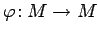
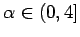

Inhalt Index DeskTop Bronstein

 Dynamische Systeme und Chaos Gewöhnliche Differentialgleichungen und Abbildungen Dynamische Systeme Grundbegriffe
Dynamische Systeme und Chaos Gewöhnliche Differentialgleichungen und Abbildungen Dynamische Systeme Grundbegriffe


Gegeben sei auf dem metrischen Raum  die Differenzengleichung
die Differenzengleichung
die auch als Zuordnung geschrieben werden kann. Dabei ist , und  ist eine stetige oder r-mal stetig differenzierbare Abbildung, wobei im letzten Fall  sei. Ist
sei. Ist  invertierbar, so definiert (17.3) durch die Festlegung
invertierbar, so definiert (17.3) durch die Festlegung
ein invertierbares zeitdiskretes dynamisches System. Ist  nicht invertierbar, so sind die Abbildungen nur für
nicht invertierbar, so sind die Abbildungen nur für  erklärt. Zur Realisierung von
erklärt. Zur Realisierung von  siehe Gleichung (5.86) zum Relationenprodukt.
siehe Gleichung (5.86) zum Relationenprodukt.
In den folgenden Beispielen werden die logistische Gleichung und die HÉNON-Abbildung betrachtet.
| Beispiel A |
|
Die Differenzengleichung </TD></TR></TABLE> mit einem Parameter  heißt logistische Gleichung. Hierbei ist , und |
| Beispiel B |
|
Die Differenzengleichung </TD></TR></TABLE> mit den Parametern a > 0 und heißt HÉNON-Abbildung (s. auch die Bilder dazu). Die dieser Gleichung (17.6) entsprechende Abbildung ist durch definiert, unendlich oft differenzierbar und umkehrbar. |